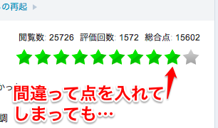
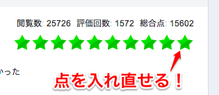
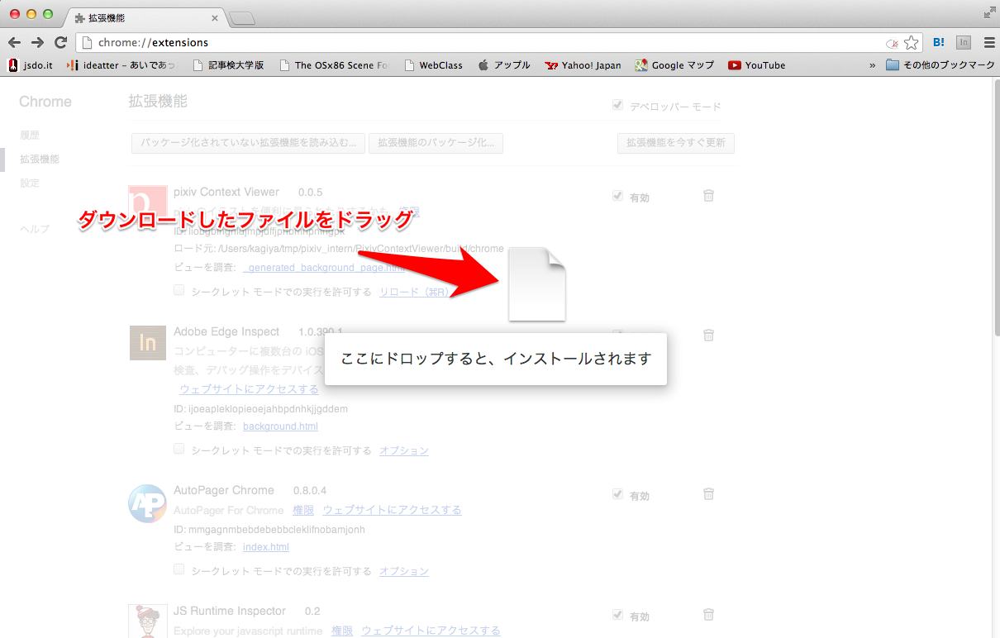
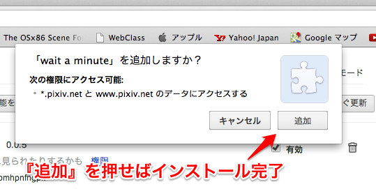
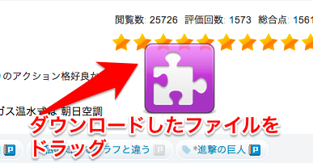
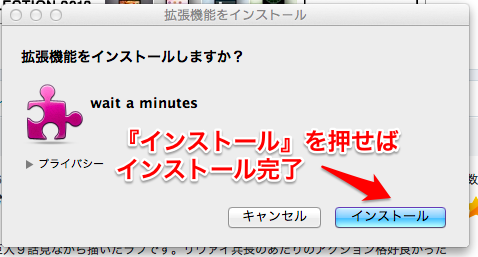

wait a minute
イラストSNS pixivの評価を、少しの間だけやり直せるようにするブラウザ拡張機能
「１０点入れるつもりが、手が滑って９点に入れてしまった…」
wait a minuteが、そんな後悔をこの世から消し去ります。
 
概要
pixivの点数評価を、 ３秒間だけ やり直しできるようにします。 評価ボタンを押した後、３秒経つか、ページを移動すると評価が確定しますのでご注意。
動作環境
最新版のOpera、Google Chromeで動作します。
ダウンロード
インストール
Google Chrome
アドレスバーにchrome://extensions/と入力し、出て来たウィンドウに、ダウンロードしたwaitaminute.crxをドラッグしてください。『「wait a minute」を追加しますか？』と聞かれるので、「追加」を押してください。
 
Opera
Operaを起動したら、ウィンドウの中に、ダウンロードしたwaitaminute.oexをドラッグしてください。『拡張機能をインストールしますか？』と聞かれるので、『インストール』を押してください。
 
TODO
- extensionの公開
- 戻る・進むボタンでページを離れたときに対応する
要望など
なるべく対応したいと思います。githubのissueに書き込んでください。
作った人: @kikuchy